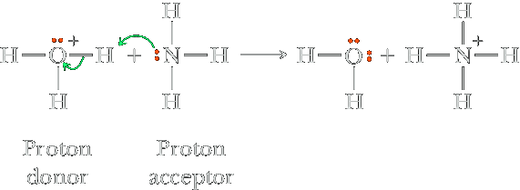

Brønsted–Lowry model of acids and bases
A more general definition of acids and bases was suggested by the Danish chemist Johannes Brønsted (1879–1947) and the English chemist Thomas Lowry (1874–1936). In terms of the Brønsted–Lowry model,
An acid is a proton (H+) donor, and a base is a proton acceptor.
For example, when gaseous HCl dissolves in water, each HCl molecule donates a proton to a water molecule and so qualifies as a Brønsted–Lowry acid. The molecule that accepts the proton, in this case water, is a Brønsted–Lowry base. To understand how water can act as a base, we need to remember that the oxygen of the water molecule has two unshared electron pairs, either of which can form a covalent bond with an H+ ion. When gaseous HCl dissolves, the following reaction occurs:
| HA(aq) Acid | + H2O (l) Base | ⇌ | H3O+ (aq) Conjugate acid | + A− (aq) Conjugate base |
This representation emphasizes the significant role of the polar water molecule in pulling the proton from the acid. Note that the conjugate base is everything that remains of the acid molecule after a proton is lost. The conjugate acid is formed when the proton is transferred to the base. A conjugate acid–base pair consists of two substances related to each other by the donating and accepting of a single proton.
L'acido, contiene l'atomo di idrogeno più facilmente ionizzabile
L'esistenza dell'acido è dunque legato a l'esistenza della base. L'acido acetico CH3COOH, è un acido, poichè cede un protone all'acqua, mentre quest'ultima è una base poichè accetta un protone. Quando CH3COOH perde un protone si trasforma in acetato CH3COO−. Anche se entrambe le specie possiedono atomi di idrogeno quello dell'acido acetico risulta più ionizzabile. Un aspetto importante della teoria di Brønsted-Lowry è il seguente:
| CH3COOH (aq) Acid | + H2O (l) Base | ⇌ | CH3COO− (aq) Conjugate base | + H3O+ (aq) Conjugate acid |
La teoria non si limita ad equilibri in cui è coinvolta l'acqua, un altro esempio di coppia acido base è il seguente:
NH3 + H2PO4− ⇌ NH4+ + HPO42−
l'ammoniaca accetta un protone quindi è una base mentre l'acido fosforico è chiaramente un acido; or
HCl + H2PO4− ⇌ Cl− + H3PO4
l'acido cloridrico si comporta da acido, mentre l'acido fosforico H2PO4- è la base.
Bases
According to the Arrhenius concept, a base is a substance that produces OH− ions in aqueous solution. According to the Brønsted–Lowry definition, a base is a proton acceptor. The bases sodium hydroxide (NaOH) and potassium hydroxide (KOH) fulfill both criteria. They contain OH− ions in the solid lattice and behave as strong electrolytes, dissociating completely when dissolving in water:
| NaOH(s) | H2O ⟶ | Na+ (aq) | + OH− (aq) |
Thus a 1.0 M NaOH solution actually contains 1.0 M Na+ and 1.0 M OH−. Because of their complete dissociation, NaOH and KOH are called strong bases in the same sense as we defined strong acids. All the hydroxides of the Group 1A elements (LiOH, NaOH, KOH, RbOH, and CsOH) are strong bases, but only NaOH and KOH are common laboratory reagents because the lithium, rubidium, and cesium compounds are expensive. The alkaline earth (Group 2A) hydroxides—Ca(OH)−, Ba(OH)2, and Sr(OH)− —are also strong bases. For these compounds, 2 moles of hydroxide ion are produced for every 1 mole of metal hydroxide dissolved in aqueous solution.
The alkaline earth hydroxides are not very soluble and are used only when the solubility factor is not important. In fact, the low solubility of these bases can be an advantage. For example, many antacids are suspensions of metal hydroxides such as aluminum hydroxide and magnesium hydroxide. The low solubility of these compounds prevents the formation of a large hydroxide ion concentration that would harm the tissues of the mouth, esophagus, and stomach. Yet these suspensions furnish plenty of hydroxide ion to react with stomach acid, since the salts dissolve as this reaction proceeds.
Magnesium hydroxide is only slightly soluble in water. (The solubility product, Ksp is 1.8 x 10−11) A suspension of the white compound in water is called milk of magnesia. This suspension has a pH of about 10, which means the solution is mildly basic. Milk of magnesia is sold as an antacid, because the magnesium hydroxide reacts to neutralize excess hydrochloric acid in the stomach.
Nello stomaco l'idrossido di magnesio non solubile è trasformato in cloruro di mangesio combinandosi con gli ioni idrogeno
Mg(OH)2 + 2HCl ⟶ MgCl2 + 2H2O
Calcium hydroxide [Ca(OH)2], often called slaked lime, is widely used in industry because it is inexpensive and plentiful. For example, slaked lime is used in scrubbing stack gases to remove sulfur dioxide from the exhaust of power plants and factories. In the scrubbing process, a suspension of slaked lime is sprayed into the stack gases to react with sulfur dioxide gas according to the following equations:
SO2 (g) + H2O(l) ⇌ H2SO3 (aq)
Ca(OH)2 (aq) + H2SO3 (aq) ⇌ CaSO3 (s) + 2H2O(l)
Slaked lime is also widely used in water treatment plants for softening hard water, which involves the removal of ions such as Ca2+ and Mg2+, ions that hamper the action of detergents. The softening method most often used in water treatment plants is the lime–soda process, in which lime (CaO) and soda ash (Na2CO3) are added to the water. As we will see in more detail later in this chapter, the CO32− ion from soda ash reacts with water to produce the HCO3− ion. When lime is added to hard water (Hard water contains Ca2+ and Mg2+ ions, among others, which are detrimental to detergent action), it forms slaked lime,
CaO(s) + H2O(l) ⟶ Ca(OH)2 (aq)
which then reacts with the HCO3− ion and the Ca2+ ion to produce calcium carbonate:
Ca(OH)2 (aq) + Ca2+ (aq) (from hard water) + 2HCO3− (aq) ⟶ 2CaCO3(s) + 2H2O (l)
Thus, for every mole of Ca(OH)2 consumed, 1 mole of Ca2+ is removed from the hard water, thereby softening it. Some hard water naturally contains bicarbonate ions. In this case no soda ash is needed—simply adding lime accomplishes the softening.
Why Are Hydrated Metal Cations Brønsted Acids?
When a coordinate covalent bond is formed between a metal cation and a water molecule, the positive charge of the metal ion and its small size means that the electrons of the H2O → Mn+ bond are very strongly attracted to the metal (Section 17.11). As a result, the O−H bonds of the bound water molecules are polarized, just as in oxoacids and carboxylic acids. The net effect is that a H atom of a coordinated water molecule is removed as H+ more readily than in an uncoordinated water molecule. Thus, a hydrated metal cation functions as a Brønsted acid or proton donor.
[Cu(H2O)6]2+ + H2O(ℓ) ⇌ [Cu(H2O)5(OH)]+ (aq) + H3O+ (aq)
The acidity of the hydrated metal ion increases with increasing charge. Consulting Table 17.3, you see that the Ka of +3 ions (for example Al3+ and Fe3+) is greater than for +2 cations (Cu2+ , Pb2+ , Co2+, Fe2+, Ni2+ ). Ions with a single positive charge such as Na+ and K+ are not acidic. (This is similar to the effect of central atom formal charge in a series of related acids. See Table 17.7.)
Gli sviluppi della teoria di Brønsted-Lowry sono i seguenti:
La teoria non è limitata all'acqua ma considera anche altri solventi.